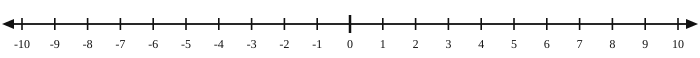

1. Without solving, which is larger: 4x + 9 or 6x + 3?
It depends. They are equal at x = 3; below that 4x + 9 is larger, above it 6x + 3 is.
2. Simplify 3(2x − 5) − (x + 7)
6x − 15 − x − 7 = 5x − 22
3. You have $50. After a $12 game, how many $8 accessories could you afford if you spent it all?
50 − 12 = 38, and 38 ÷ 8 = 4.75, so 4 accessories.
| Symbol | Meaning | Example |
|---|---|---|
| ≠ | Not equal | x ≠ y |
| > | Greater than | x > y |
| < | Less than | x < y |
| ≥ | Greater than or equal to | x ≥ y |
| ≤ | Less than or equal to | x ≤ y |
x > 3

x < 3
x ≥ 3
x ≤ 3
x > 3: open circle at 3, arrow right x < 3: open circle at 3, arrow left
x ≥ 3: closed circle at 3, arrow right x ≤ 3: closed circle at 3, arrow left
Open or closed circle? open, −2 is not included Arrow points: left
Solve: x > 7 (open circle at 7, arrow right)
Solve: x ≤ 3 (closed circle at 3, arrow left)
Solve: x ≥ −3 (closed circle at −3, arrow right)
| 3x − 4 > 5 | the inequality |
| 3x > 9 | add 4 to both sides |
| x > 3 | divide both sides by 3 |
| 4x − 1 ≤ 19 | the inequality |
| 4x ≤ 20 | add 1 to both sides |
| x ≤ 5 | divide both sides by 4 |
| 5 − 2x < −3 | the inequality |
| −2x < −8 | subtract 5 from both sides |
| x > 4 | divide by −2 → flip! |
Test x = 5: 5 − 2(5) = −5, and −5 < −3 ✓
| −3x + 2 ≥ 14 | the inequality |
| −3x ≥ 12 | subtract 2 from both sides |
| x ≤ −4 | divide by −3 → flip! |
Test x = −5: −3(−5) + 2 = 17, and 17 ≥ 14 ✓
Let c be the number of packages you purchase.
Inequality: 3.50 + 1.25c ≤ 20
Solution: c ≤ 13.2 So you can buy 13 packages.
Why did we round down instead of up? You can only buy whole packages. 14 packages cost $21, more than $20.
Let h be the number of hours you work.
Inequality: 40 + 9h ≥ 100
Solution: h ≥ 6.6 (about 6.67) So you must work 7 hours.
Why round up this time? after 6 hours you only have $94
1. x > 2
2. x < −3
3. x ≥ 0
4. x ≤ 5
5. x < 4
1. open at 2, right 2. open at −3, left 3. closed at 0, right 4. closed at 5, left 5. open at 4, left
6. 3x − 7 > 2x + 4 x > 11 (open at 11, right)
7. 5 + 2(x − 3) ≤ 11 x ≤ 6 (closed at 6, left)
8. 4(x + 2) > 3x + 10 x > 2 (open at 2, right)
9. 7 − 2(x + 5) < 3 x > −3 (open at −3, right)
10. 6x + 4 ≥ 2x + 20 x ≥ 4 (closed at 4, right)
11. −3(x − 2) > 9 x < −1 (open at −1, left)
12. 2(x + 4) − 3x < 5 x > 3 (open at 3, right)
13. −4x + 7 ≤ 2x − 5 x ≥ 2 (closed at 2, right)
14. 5(x − 1) > 2(x + 8) x > 7 (open at 7, right)
15. −2(3x + 4) ≥ 8 − x x ≤ −165 = −3.2 (closed at −3.2, left)
| Situation | Inequality | Solution |
|---|---|---|
| 16. You must be at least 48 inches tall to ride. Let h = your height. | h ≥ 48 | at least 48 inches |
| 17. No more than $30 at the store. A sandwich is $6 and drinks are $2 each. How many drinks? | 6 + 2d ≤ 30 | d ≤ 12 drinks |
| 18. A sitter charges $25 plus $12 per hour and you have $85. How many hours? | 25 + 12h ≤ 85 | h ≤ 5 hours |
| 19. You have 14 stickers and want at least 30. How many more? | 14 + s ≥ 30 | s ≥ 16 more |
| 20. A ticket is $42 and parking passes are $8. You have $90. How many passes? | 42 + 8p ≤ 90 | p ≤ 6 passes |
| 21. A taxi costs $3 plus $0.75 per mile and you have $15. How many miles? | 3 + 0.75m ≤ 15 | m ≤ 16 miles |
| 22. A tank starts at 20 gallons and drains 2 gallons per minute. When is it below 8 gallons? | 20 − 2t < 8 | t > 6 minutes |
| 23. A bus rental is $200 plus $15 per person, and the budget is $500. How many people? | 200 + 15p ≤ 500 | p ≤ 20 people |
0.40b + 2 ≤ 20 → 0.40b ≤ 18
b ≤ 45, so at most 45 beads
7s + 10(20) ≥ 400 → 7s ≥ 200
s ≥ 28.57…, and tickets are whole, so at least 29 student tickets.